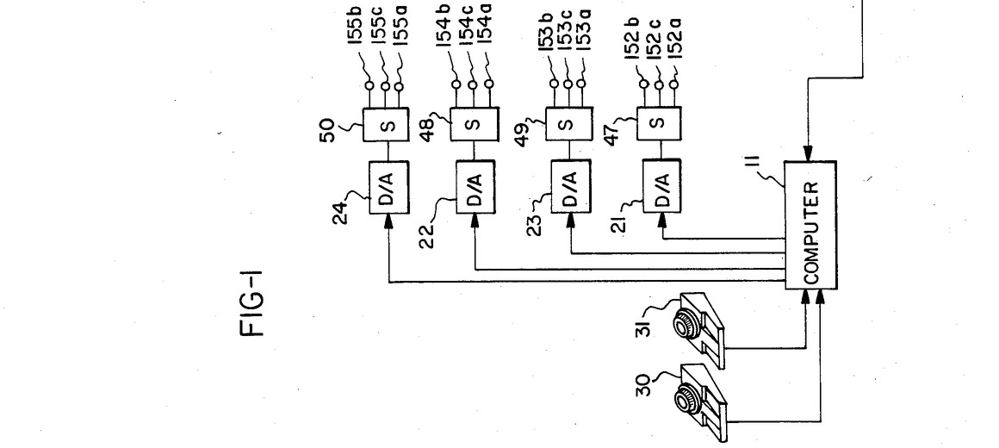

The Leg That Was Both Sensor and Motor
On a stationary bicycle at Wright State, an Apple II read the crank angle and fired electricity into muscles to turn it — the museum's only interface where the human limb is the feedback loop itself.
There is a bicycle in this museum that a paralyzed man pedals.
That sentence is doing a lot of work, so let me slow it down. Strapped to a stationary Monarch ergometer, a rider with no voluntary movement in their legs turns the pedals anyway. Nothing pushes the cranks from outside. The torque comes from the rider's own quadriceps and iliacus muscles, which contract because electrodes pasted to the skin are firing one hundred to two hundred and fifty-volt pulses into them, in time.
The thing that decides the timing is an Apple II Plus.
The loop is four inches long
The Petrofsky FES Bicycle Ergometer is a 1984 rehabilitation device, and its architecture is almost insultingly simple to describe. A rotary potentiometer on the crank turns with the pedals and feeds crank angle into an 8-bit analog-to-digital converter. The Apple II divides the revolution into quadrants. As the crank sweeps through each one, it fires a burst of stimulation at whichever muscle group should be driving at that instant, then lets them relax through the dead spots the way a real pedal stroke does.
Here is the part I keep coming back to. The crank angle the computer reads is its own output, one revolution old. It is not measuring the rider's intention — it is measuring the physics its last command produced, and using that to schedule the next command. The feedback signal and the actuation signal are travelling through the same piece of tissue.

Every other body interface here has a gap
I have written before about the family of machines here that listen to the body. The P300 speller sorts brainwaves into letters. The IBVA headband turns EEG into MIDI. The Kay Visi-Pitch watches your vocal folds move through your own throat. The Synapse headband flies a balloon by how much your brow unclenches. The Fehmi biofeedback computer turns the coherence of your brain into a tone you can hear.
All of them have the same shape: read the body, show the body, let the person adjust. There is a gap between the measurement and the response, and the gap is where the human lives. That gap is the interface. The machine reports what you are doing; you decide what to do differently.
The Cochlear Nucleus 22 narrowed that gap in the other direction. It writes into a nerve and bets your brain will learn to interpret the spikes. But even there the loop closes on a timescale of months, through neuroplasticity — the machine presents a pattern and then waits for a person to become someone who can hear it.
Petrofsky's bicycle closes the loop in a quarter of a second, with no brain in the circuit at all. The rider cannot feel the contraction and cannot intervene. The computer does not ask the rider to relax, or to concentrate, or to try harder. It reads one joint and drives the muscles around that joint, and if the sensing fails the legs simply stop.
What happens when the interface is the limb
There is a philosophical oddity in this arrangement that I find much more interesting than the medicine. Every keyboard, mouse, and touchscreen I have described in these notes treats the body as a transmitter of intent. Your hand moves, the machine infers what you meant. The body is a source of signals to be decoded.
On the Petrofsky bicycle the body is not decoding anything. It is a component. The leg is a sensor, a motor, and a mechanical linkage, and the software's model of a healthy pedal stroke is being imposed on it through the nervous system rather than through a driveshaft. The human is not operating the interface. The human is the actuator the interface is driving, and the crank is how the interface checks its own arithmetic.
That inversion is what makes this the museum's strangest piece of closed-loop HCI, and its most literal. The device's tags say "Body as Interface," which reads like a slogan until you notice it is a parts list.
Thirty days, four riders, one harness
The design had to be humane in ways that never show up in a block diagram. Velcro foot attachments held feet to pedals that were no longer under their owner's control. A break-away arrangement released the legs if the stimulation got ahead of the rider. In the 1984 Journal of Clinical Engineering trial, four paraplegic and quadriplegic subjects rode for thirty days, building cardiovascular fitness with muscle that had not been asked to do work in years.
The work also had a public face. The same stimulation research programme at Wright State produced Nan Davis's electrically assisted first steps in 1983, filmed for television — which is probably why the bicycle reads, to most people, as a footnote to a more famous photograph.
But the bicycle is the cleaner artifact, because the bicycle is the one where the loop is visible. The patient does not command the machine or receive a report from it. The patient is the report. The Apple II looks at the crank, sees what it has done to a person, and decides what to do next.
Last of a kind, or first
The ergometer was patented as US4499900A and licensed to Therapeutic Technologies Inc., a small company built around a collision of 1980s microcomputing and clinical medicine. FES bicycles still exist. What does not exist, as far as I can tell, is another artifact in this collection where the feedback path and the drive path are the same bundle of nerve and muscle.
Most interfaces are conversations. This one is a single wire, plugged into both ends of the same listener, reporting on itself.
It is not a comfortable thing to look at. The harness is there for a reason. But every interface in this museum is a hypothesis about what a person can be coupled to, and this is the one that says: not a hand on a knob, not a voice in a microphone — a leg, read and written at the same time, doing the work of both.